Your bookmarks,
organised like a warehouse.
Tab Warehouse is a free Chrome extension: a new tab page with a clock and your favourite sites, a folder view that shows every URL in full, and a Board with every folder side by side.
- 0 runtime dependencies
- 0 servers or accounts
- 100% secure, local storage
- 100% real Chrome bookmarks
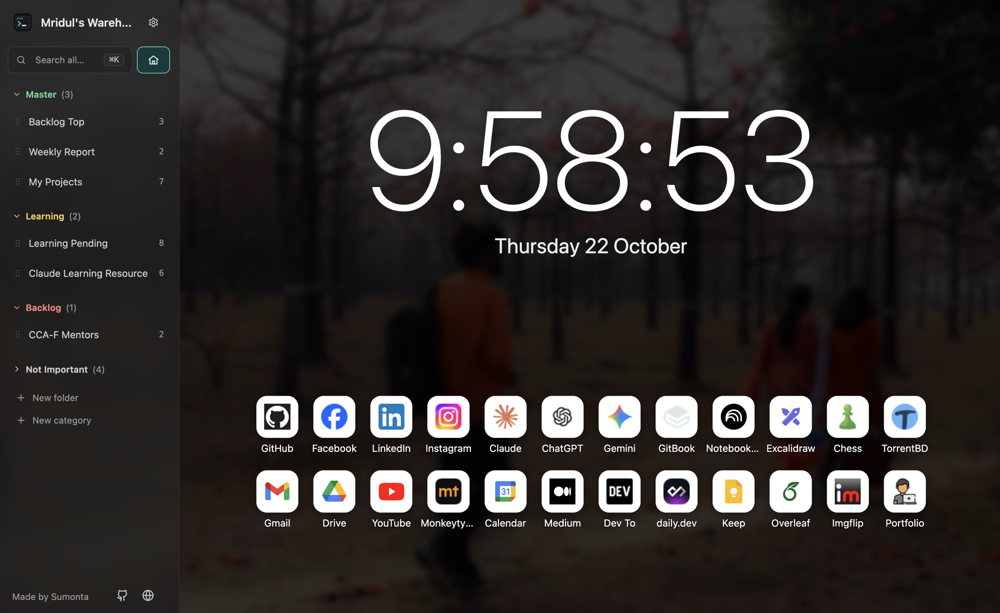
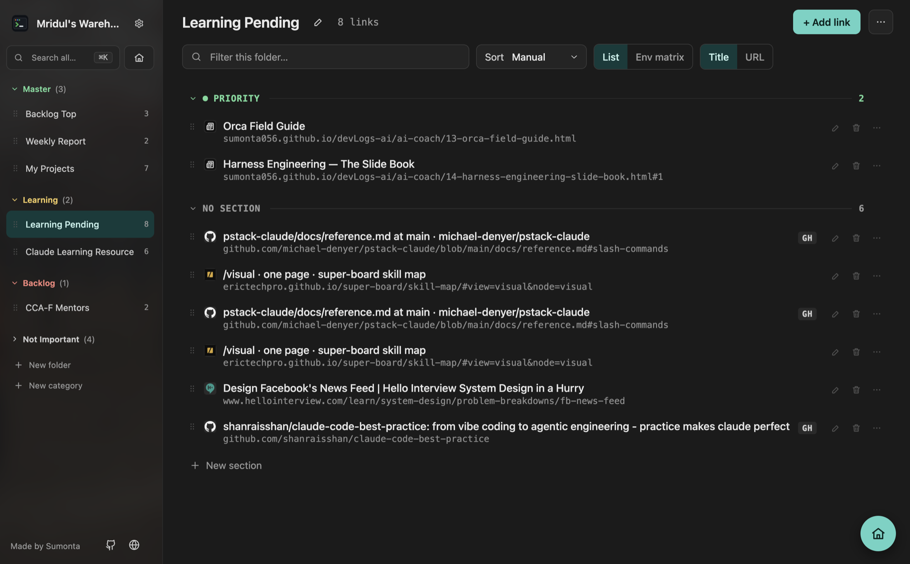
Live demo
Click around the real extension
This is the real extension code, running in your browser with sample bookmarks. Nothing is saved: reload to start again. Things to try:
- Open Shop project and switch to Tag matrix
- Click Board and drag a card to another column
- Press ⌘K and type checkout
- Open ⚙ Settings and change the accent color
- Save the page in the Popup tab, then look in the folder
On a phone the demo is small. Open it full screen, or try it on a computer.
Features
Everything a developer's bookmark bar is missing
Home page
Every new tab opens on Home: a large clock, the date and your link tiles. The tiles are a normal bookmark folder called Home, so they sync too.
- Background photo with darkness, blur and opacity
- Clock size, 12 or 24 hours, seconds and date
- Drag tiles to reorder; right-click to change the icon
- Official Gmail, Drive, Calendar, Keep and Docs icons
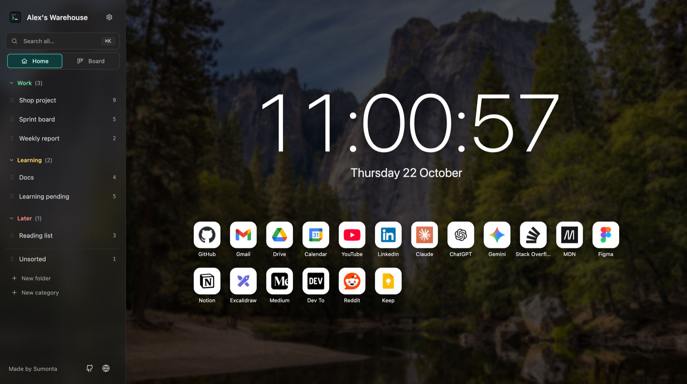
Folders and sections
The sidebar lists the folders under your root folder. Open one to see each link with its full URL. Split a folder into sections such as Checkout or Blocked — each section is a real subfolder.
- Sort: manual, name, URL, environment, date added or host
- Show the title first or the URL first
- Edit inline, delete with an 8-second undo
- Open all, copy all URLs, filter the folder
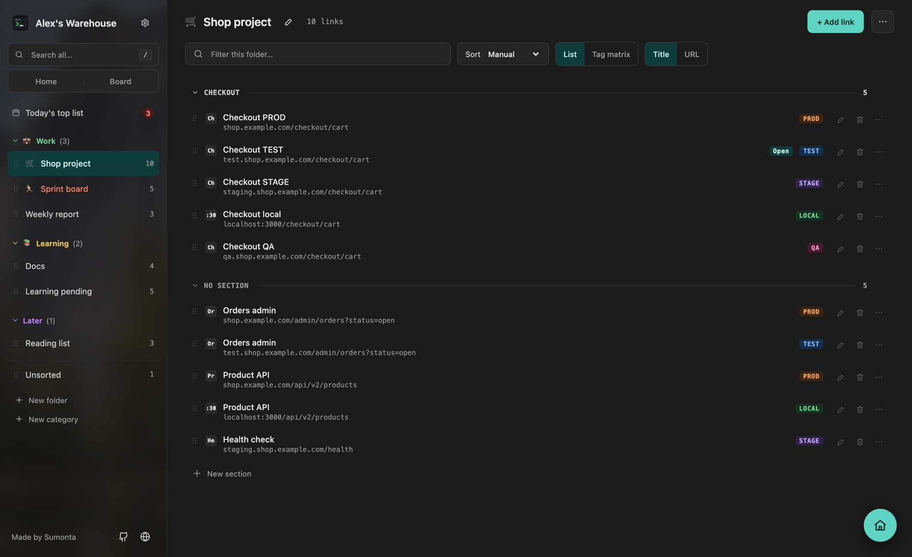
Notes and priority
Give a link a short note and a priority when you save it, or later from its menu. Important links stay at the top of the folder.
- Priority High, Medium or Low, with a colored stripe
- Priority links come first, under High, Medium and Low headers
- Filter buttons: High, Medium, Low or Has note
- Search also finds the text in your notes
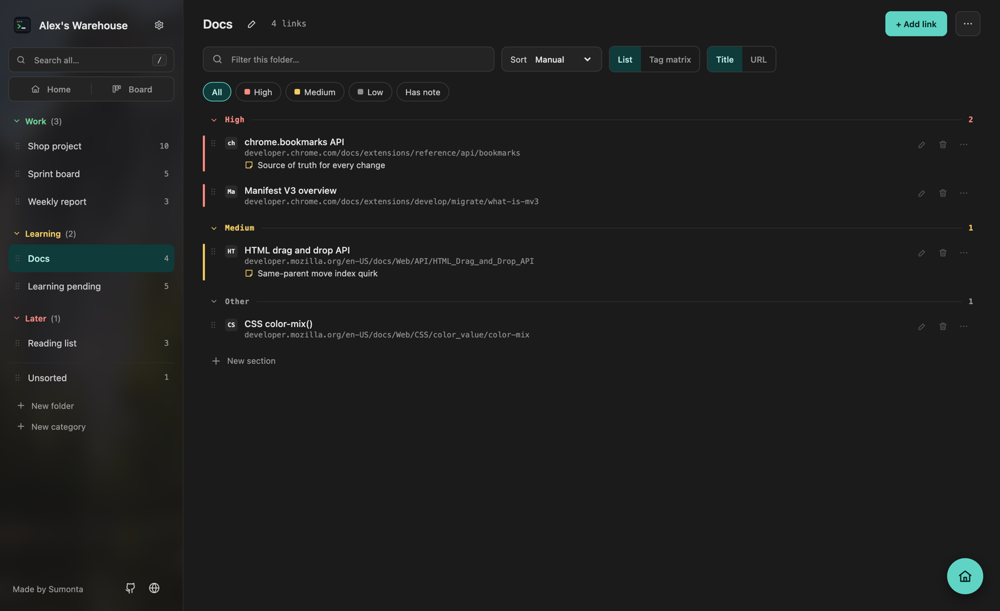
Board
See every folder at once, as a column of cards. Columns sit in lanes by category, or in one long row. Sections show as small headers inside each column.
- Drag a card to another column or section to move it
- Drag a column header to change the folder order
- Add a link at the bottom of any column
- Filter every column at once; delete with undo
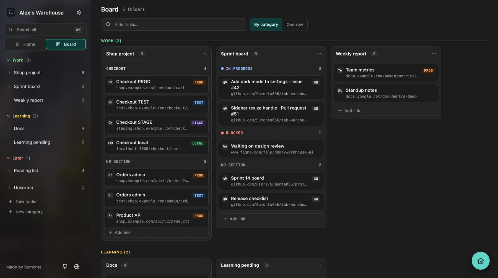
Tag matrix
One row per page, one column per tag, your own tags included. See at a glance which versions you have saved. An empty cell offers
+ derive: it opens the same path on the other host, and Alt+click saves it.
- Hosts come from Same site in each version
- Add your own tags, such as QA or UAT, in one of 6 colors
- Jump from TEST to PROD in one click
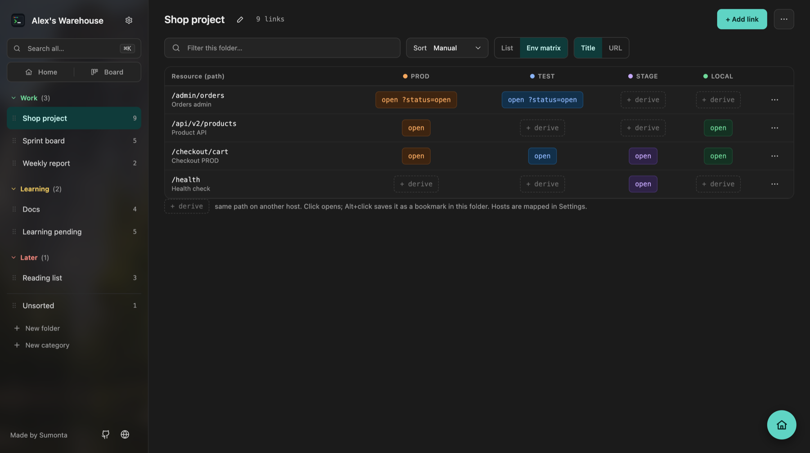
Categories and drag and drop
Group folders into colored categories such as Work, Learning and Later. Drag folders, headers, sections and links. The sidebar order lives in the extension, so Chrome's own tree never changes.
- Drop a link on a folder to move it there
- Home and Board tabs sit under a full-width search
- Alt+↑ / Alt+↓ moves a folder with the keyboard
- Resizable sidebar, 180–440 px
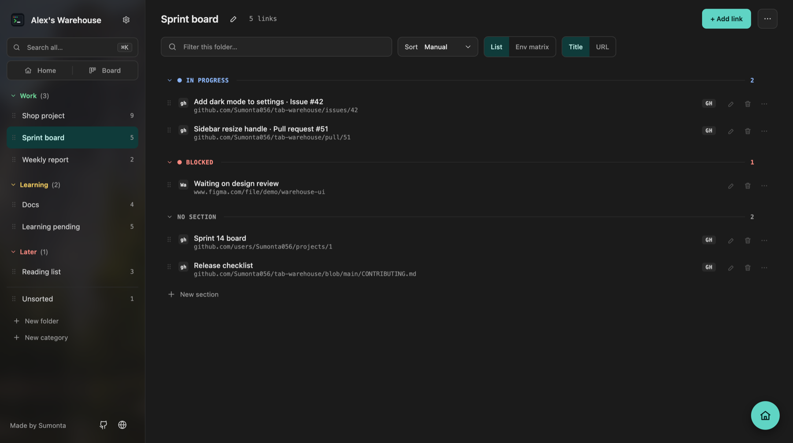
Command palette and search
Press ⌘K and type. The palette finds links, folders and Settings tabs by title, address, folder, note or tag, and highlights the match. Enter opens it, ⌘Enter opens it in a background tab.
- / searches every folder in the sidebar
- Type tw and a space in Chrome's address bar to search from any tab
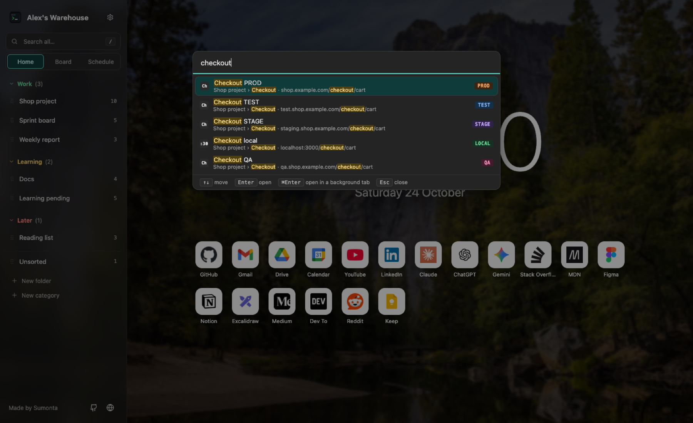
Save the current tab
Press ⌘⇧B (Ctrl+Shift+B on Windows and Linux) on any site. Pick a folder or type a new name, then press Enter.
- Save the page, or the whole site (
origin/) - Shows the tag and opens this page in your other versions
- Tells you if the URL is already saved
- Add a priority and a short note
- ⌘⇧BOpen the popup on any page
- TypeFind a folder, or create one
- ↵Saved. The popup closes
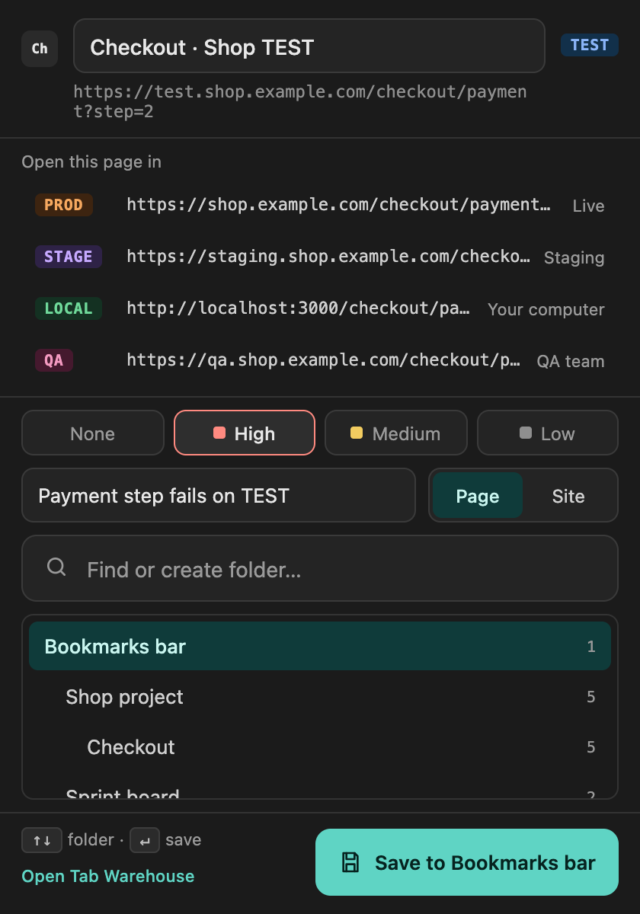
Settings
Six tabs. No Save button.
Every change saves at once. Pick a tab to see what it holds.
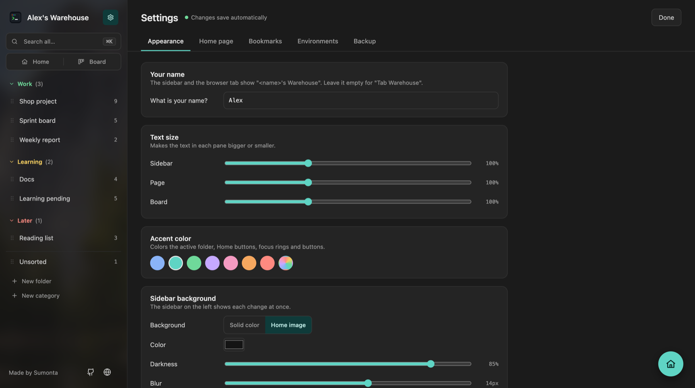
How tags work
Two short lists, written in plain words
Tags by address. "If the address contains test., give the tag TEST." The list is checked from top to bottom and the first
match wins. Without rules, words like PROD or TEST in the title still work. Add your own tags, such as QA, next to the built-in ones.
Same site in each version. Write the PROD, TEST, STAGE and LOCAL hosts of a site once. Every link of that site then offers Open on TEST / PROD / …, and the tag matrix can derive missing links.
A Try it box tells you which rule matches a link and why. Copy both lists as text and paste them on another machine.
localhost→LOCALtest.→TESTstaging.→STAGEshop.example.com→PRODhttps://test.shop.example.com/cartRule 2 matched: the address contains "test."Install
Ready in a minute
Download the ZIP, load it in Chrome, open a new tab. No account and no build step.
-
Download and unzip
Click the Download button. Double-click the ZIP file to unzip it. Move the folder to a place where it can stay, for example Documents: Chrome loads the extension from it.
-
Open the extensions page
Type this address in Chrome's address bar and press Enter. Chrome does not open
chrome://links from websites, so copy it.chrome://extensions -
Turn on Developer mode
The switch is in the top-right corner of the extensions page.
-
Click Load unpacked
Choose the unzipped folder, the one that contains
manifest.json. The Tab Warehouse card appears. -
Open a new tab and set it up
Chrome may ask to keep the new tab page: click Keep it. Then open ⚙ Settings:
- Appearance: type your name
- Home page: add the sites you use most
- Bookmarks: pick the folder the sidebar shows
Update to a new version: download the new ZIP, replace the old folder with the new one, then click ↻ on the extension card. Your bookmarks and settings stay.
Keyboard shortcuts
| ⌘⇧B / Ctrl+Shift+B | Save the current tab |
| ⌘K / Ctrl+K | Open the command palette |
| / | Search all folders |
| tw + space | Search from the address bar |
| Enter | Open the first result |
| Esc | Clear search; close Settings |
| j / k | Next / previous folder |
| Alt+↑ / Alt+↓ | Move a folder or section |
Privacy and permissions
No server, no account, no analytics. Links stay in Chrome's bookmarks; preferences stay in chrome.storage.local.
bookmarks |
Read and edit your bookmarks |
storage |
Save sidebar order, env rules, link notes and the Home look |
favicon |
Show site icons from Chrome's cache |
activeTab |
Read the current tab, only when you open the popup |